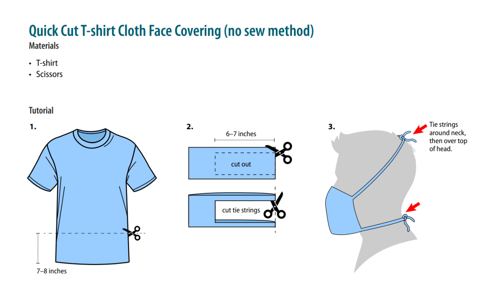
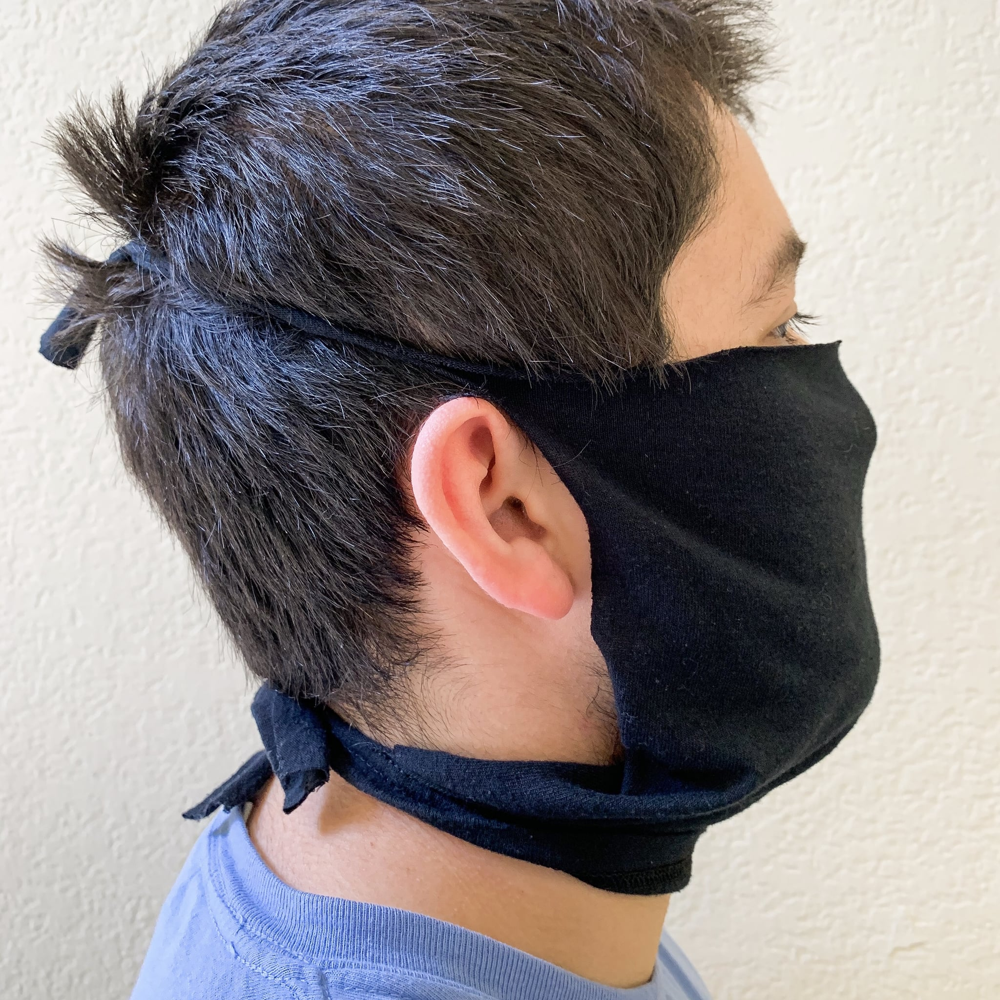
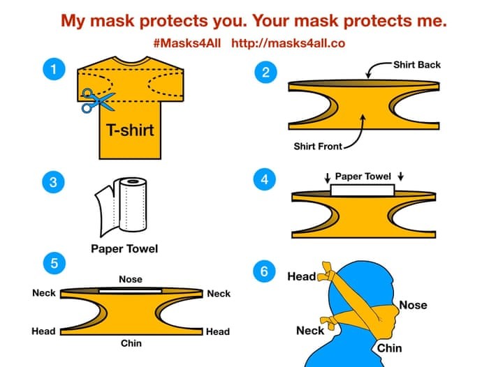
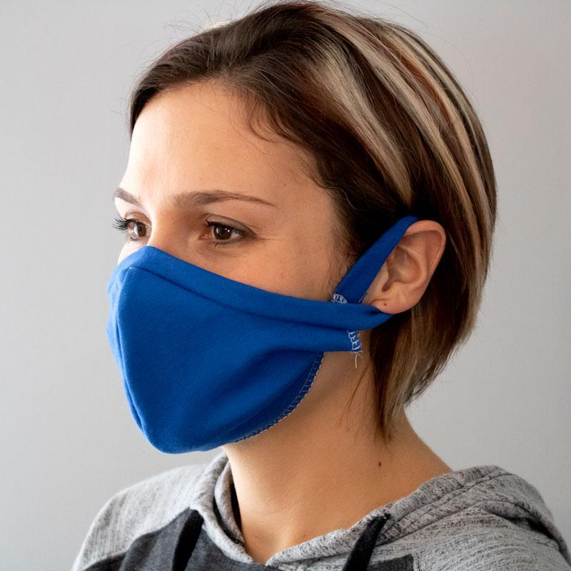
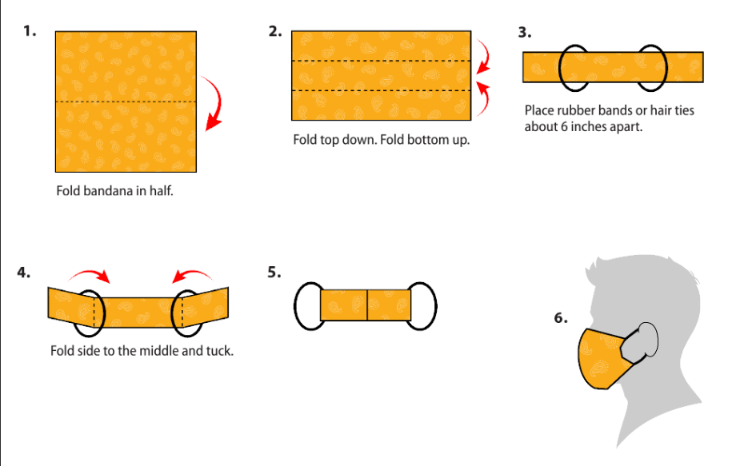

What is a T-Shirt Mask?
A T-shirt mask is a face mask made out of a plain old t-shirt; usually cotton or some kind of cotton blend is best. If you have no sewing experience or if masks get sold out too quickly, you can always resort to just using a regular old t-shirt!
You don't want to go out looking like this guy now do you?
The Pros and Cons
Pros
- Cost-effective: saves money
- Readily available material
- Comfortable
- Feels secure since you are tying it on
Cons
- Have to constantly wash it after each use
- Takes a little more time to tie it on
- May not be as effective since you cannot check the quality of the material
- May need an extra layer of fabric in order for it to be more effective
How to Make A T-Shirt Mask
There are two ways you can make a t-shirt mask. Also, it's recommended to put an extra layer or two of fabric, or even just a paper towel that you can switch out with every use! Cotton is the preferred type of fabric to use.
Mask 1
How It Will Look
Mask 2
How It Will Look
What is a Bandana Mask?
A bandana mask is a face mask created from a bandana. It's also a decent substitute for those with limited access to masks, or for those who do not want to ruin any t-shirts they have.
The Pros and Cons
Pros
- Easy to put on
- Readily available material
- Comfortable
- Very simple to make
Cons
- Must be washed after each use
- Due to the history of bandanas being used to identify gang members, people of color may be at higher risk of being targeted
How to Make a Bandana Mask
You can just tie the bandana to your face to make a mask, but this way is a more effective way to wear it and be protected better.
